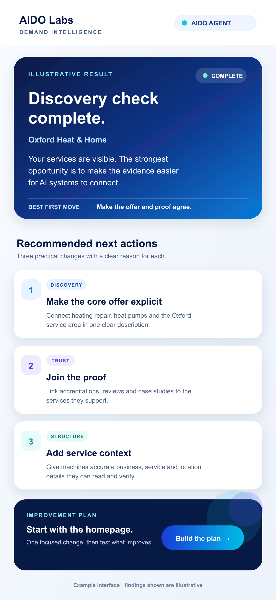

Find
Where do you appear?
See which real questions and needs bring the company into consideration.
AIDO Labs · Demand intelligence
AIDO Labs helps a company understand when AI finds and recommends it, what influences the result and whether a tested change improves visibility.
From discovery to evidence
AIDO looks at the questions that bring a company into consideration, the public information shaping how it is represented and whether a defined change makes a measurable difference.
Find
See which real questions and needs bring the company into consideration.
Understand
Identify the public facts and sources affecting how the company is described.
Test
Make a defined change, repeat the observation and compare the result.
Clear evidence
AIDO records the question, system, date, sources and limits behind each result. Natural discovery stays separate from introduced tests, and consumer AI observations stay separate from API and other evidence.
Where referral and conversion data are available, the work can be connected to what customers actually do. Visibility alone is not treated as proof of commercial value.
